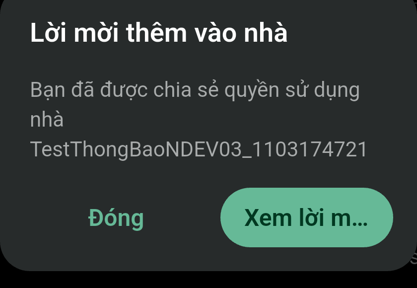

Báo cáo kiểm thử
Bộ test thông báo — phần còn lại
Kết quả cuối: 20/20 case PASS. 15 case đã PASS từ trước, gồm hai case kế thừa và NDEV-01 theo recheck thủ công; năm case còn lại được cập nhật PASS theo xác nhận recheck thủ công của người dùng ngày 2026-11-04 trên build 2.2.0 (24). Bằng chứng lượt tự động ban đầu được giữ riêng; chưa có log/ảnh chi tiết cho năm recheck mới.
Phát hiện chính
NDEV-01 và năm case NDEV-07/08/09/10/12 hiện PASS; năm case được cập nhật theo xác nhận recheck thủ công ngày 2026-11-04 trên build 2.2.0 (24).
Kết quả từng case
Mở từng mục để xem điều kiện, thao tác, kết quả và bằng chứng.
NUI-01Chuyển bốn tab local — kế thừa từ Thông báo 2PASS
Điều kiện
Kết quả PASS đã có trong lượt Thông báo 2.
Thực hiện
Không chạy lại theo yêu cầu.
Kỳ vọng
Mở được hộp thư và chuyển bốn tab.
Quan sát
PASS kế thừa; không tính là thực thi mới.
Bằng chứng
ANDROID-SMOKEChuyển bốn tab trên Android — kế thừaPASS
Điều kiện
Báo cáo lượt Thông báo 2 trên Samsung SM_G991B.
Thực hiện
Không chạy lại theo yêu cầu.
Kỳ vọng
Mở màn thông báo và chuyển đủ bốn tab.
Quan sát
PASS kế thừa, 14/14 bước trong 24.1 giây.
Bằng chứng
LOCALRegression local, loại NUI-01PASS
Điều kiện
Flutter 3.38.4/Dart 3.10.3; dependencies của checkout hiện tại.
Thực hiện
6 tệp LOCAL_TESTS; Flutter --no-pub, lọc đúng test NUI-01 đã chạy trước đó.
Kỳ vọng
Không còn test lỗi hoặc bị skip trong phần regression được chọn.
Quan sát
64/64 test hiển thị PASS; 8 sự kiện hidden cũng success.
SIMULATIONNotification Gateway simulation localPASS
Điều kiện
Postman CLI 1.74.0 và simulation local.
Thực hiện
Runner simulation; không gọi production và không chạm thiết bị.
Kỳ vọng
Test Dart đi qua local API simulation thành công.
Quan sát
1/1 PASS; đây không phải push thật.
Bằng chứng
E2E-DETAILMở chi tiết thông báo thườngPASS
Điều kiện
Thông báo fixture thuộc A, body đối chiếu bằng API.
Thực hiện
Lumi Tester Android; lần đầu bị màn hình khóa, retry cùng fixture.
Kỳ vọng
Chi tiết đúng nội dung và đóng được.
Quan sát
Retry PASS 8/8 lệnh; lần đầu là lỗi điều kiện máy, không tính FAIL sản phẩm.
Bằng chứng
E2E-PENDINGLời mời còn hiệu lựcPASS
Điều kiện
Invite backend đang pending và notification ID được đối chiếu.
Thực hiện
Mở notification, kiểm tra CTA; bấm CTA ở flow tiếp nối.
Kỳ vọng
Nội dung đúng; chỉ sau “Xem lời mời” mới kiểm tra nghiệp vụ.
Quan sát
Nút “Xem lời mời” xuất hiện; trang invite tải được và hiện “Xác nhận”/“Từ chối”. Không chấp nhận lời mời.
E2E-EXPIREDLời mời đã hết hiệu lựcPASS
Điều kiện
Invite notification còn đọc được, nhưng business state không còn pending.
Thực hiện
Mở chi tiết, bấm “Xem lời mời”; continuation dùng tiêu đề thực tế của UI.
Kỳ vọng
Hiện hết hiệu lực và không còn CTA hành động.
Quan sát
PASS 6/6 lệnh; lần đầu locator tiêu đề chung sai, đã đối chiếu UI rồi chạy tiếp.
Bằng chứng
E2E-PUSHMở notification từ khay hệ thốngPASS
Điều kiện
Push thật từ API nghiệp vụ tới máy Android; selector body có marker duy nhất.
Thực hiện
Đưa app xuống nền, mở khay, bấm push và đối chiếu popup.
Kỳ vọng
Push mở đúng nội dung trong app.
Quan sát
PASS qua flow NDEV-02: 7/7 lệnh, body khớp; không dùng kết quả này để suy ra âm thanh hoặc iOS.
NDEV-01Nhận push khi app đang mởPASS
Điều kiện
App A mở ở hộp thư; API nghiệp vụ tạo invite mới với marker duy nhất.
Thực hiện
Push tới đúng một lần trên Android; đợi inbox Gateway và UI refresh.
Kỳ vọng
Title/body đúng, xuất hiện một lần và inbox cập nhật.
Quan sát
Lần chạy tự động 03/11: system notification có một record nhưng API không trả marker và exact-text wait trong UI timeout. Recheck thủ công 04/11: người dùng xác nhận thấy thông báo trong hộp thư app; trạng thái mới nhất PASS. Chưa có ảnh/mốc giờ/marker kèm theo; âm thanh chưa đo.
NDEV-02Push tới khi app ở nềnPASS
Điều kiện
App được đưa về nền bằng Home; backend API tạo sự kiện removal test.
Thực hiện
Xác minh exact body chỉ có một notification record, bấm từ khay.
Kỳ vọng
Thông báo tới máy và mở đúng nội dung.
Quan sát
PASS; 7/7 lệnh, app mở đúng body.
NDEV-03Push sau khi đóng app bình thườngPASS
Điều kiện
Vuốt task khỏi Recents; app task và process đều vắng mặt trước khi gửi.
Thực hiện
API tạo invite mới khi app đã đóng; mở push trong khay. Không dùng force-stop.
Kỳ vọng
Mở đúng nội dung khi app được khởi chạy từ push.
Quan sát
PASS; body đúng và app mở detail. FCM khởi tạo process nền trước khi tap, nên không khẳng định process còn lạnh tại thời điểm tap.
Bằng chứng
Ảnh bằng chứng đã cắt


NDEV-04Đọc một mục/đọc tất cả, đóng mở lạiPASS
Điều kiện
Server có mục unread; API readback xác thực.
Thực hiện
Đọc một notification ở case detail; đọc tất cả online; force-stop/relaunch app rồi vào lại inbox.
Kỳ vọng
Trạng thái bền sau khi app mở lại và unread count đúng.
Quan sát
7/7 mục server đã đọc; unread_count=0; inbox mở lại thành công. Read-all đã bao gồm các notification cũ sẵn có của tài khoản A.
NDEV-05Đọc một mục khi offline rồi đồng bộPASS
Điều kiện
Fixture unread riêng; Wi-Fi và mobile data có thể khôi phục.
Thực hiện
Mất mạng, mở/đọc item, nối mạng và đọc lại trạng thái server.
Kỳ vọng
Read được đồng bộ và không trở lại unread.
Quan sát
Flow offline PASS; API readback xác nhận fixture đã đọc sau khi reconnect.
NDEV-06Read-all offline và push mới đến sauPASS
Điều kiện
Thiết bị mất internet đã xác minh; API nghiệp vụ tạo notification mới khi offline.
Thực hiện
Xác nhận read-all offline, tạo fixture mới, nối mạng, kiểm tra server, rồi đọc tất cả online.
Kỳ vọng
Read-all offline không tự áp dụng lên item đến sau; item chưa gửi được cần thao tác online.
Quan sát
Trước read-all online, server còn 5 unread và fixture mới vẫn unread. Sau thao tác online unread_count=0.
NDEV-07App toggle và quyền OSPASS
Điều kiện
Lần chạy tự động ban đầu không thay đổi app toggle/OS permission. Người dùng xác nhận đã recheck thủ công trên build 2.2.0 (24); chi tiết cấu hình recheck chưa được ghi lại.
Thực hiện
Người dùng xác nhận đã thực hiện lại kịch bản app toggle/OS permission theo case; không có log từng bước kèm theo.
Kỳ vọng
Push chỉ được nhận theo cấu hình mới và endpoint đăng ký cập nhật đúng.
Quan sát
PASS theo xác nhận recheck thủ công của người dùng ngày 2026-11-04. Lượt tự động ban đầu chưa chạy case; không có event/API log hoặc screenshot mới để đối chiếu độc lập.
NDEV-08Đổi Việt/Anh và push theo localePASS
Điều kiện
Lần chạy tự động ban đầu chưa có fixture English đã xác minh. Người dùng xác nhận đã recheck thủ công trên build 2.2.0 (24); fixture và locale cụ thể chưa được ghi lại.
Thực hiện
Người dùng xác nhận đã thực hiện lại kịch bản đổi locale và kiểm tra push theo case; không có log từng bước kèm theo.
Kỳ vọng
UI và nội dung push khớp contract locale backend.
Quan sát
PASS theo xác nhận recheck thủ công của người dùng ngày 2026-11-04. Lượt tự động ban đầu chưa chạy case; không có payload hoặc screenshot mới để đối chiếu độc lập.
NDEV-09Đổi tài khoản A/B và cô lập dữ liệuPASS
Điều kiện
Lần chạy tự động ban đầu không chuyển phiên A/B trên thiết bị. Người dùng xác nhận đã recheck thủ công trên build 2.2.0 (24); chi tiết tài khoản và trạng thái session chưa được ghi lại.
Thực hiện
Người dùng xác nhận đã thực hiện lại kịch bản đổi tài khoản A/B và kiểm tra cô lập dữ liệu theo case; không có log từng bước kèm theo.
Kỳ vọng
B không thấy inbox/badge/payload của A.
Quan sát
PASS theo xác nhận recheck thủ công của người dùng ngày 2026-11-04. Lượt tự động ban đầu chưa chạy case; không có API/device log mới để đối chiếu độc lập.
NDEV-10Push mở mục ở trang sauPASS
Điều kiện
Lượt tự động ban đầu chỉ thấy 7 mục và không có next_cursor. Người dùng xác nhận đã recheck thủ công trên build 2.2.0 (24); fixture và cursor của lần recheck chưa được ghi lại.
Thực hiện
Người dùng xác nhận đã thực hiện lại kịch bản mở push tới mục ở trang sau theo case; chi tiết fixture/cursor và từng bước chưa được lưu.
Kỳ vọng
Mục sau trang đầu mở đúng, cursor không lặp/mất mục.
Quan sát
PASS theo xác nhận recheck thủ công của người dùng ngày 2026-11-04. Lượt tự động ban đầu bị chặn do thiếu trang sau; chưa có API/cursor log mới để đối chiếu độc lập.
NDEV-11Invite pending và hết hiệu lựcPASS
Điều kiện
Hai fixture business tách riêng: pending và đã cancel/expired.
Thực hiện
Mở notification; với pending bấm “Xem lời mời”; với expired kiểm tra thông báo hết hiệu lực.
Kỳ vọng
Pending mở lời mời; invite hết hiệu lực không còn action.
Quan sát
Cả hai nhánh đúng. Invite test còn pending đã được cancel trong cleanup.
NDEV-12Nâng cấp từ OneSignal cũPASS
Điều kiện
Lượt tự động ban đầu thiếu APK tiền migration và installation OneSignal cũ. Người dùng xác nhận đã recheck thủ công trên build 2.2.0 (24); thông tin APK/installation dùng khi recheck chưa được ghi lại.
Thực hiện
Người dùng xác nhận đã thực hiện lại kịch bản nâng cấp từ OneSignal cũ theo case; chi tiết phiên bản APK và từng bước chưa được lưu.
Kỳ vọng
Giữ dữ liệu cũ và nhận đúng một push sau migration.
Quan sát
PASS theo xác nhận recheck thủ công của người dùng ngày 2026-11-04. Lượt tự động ban đầu bị chặn do thiếu artifact; chưa có APK hash, push log hoặc readback mới để đối chiếu độc lập.
Giới hạn và khôi phục
Bằng chứng phản ánh đúng lượt chạy này và trạng thái thiết bị.
Giới hạn: Lượt tự động chính thức chạy trên release 2.1.1 (23); người dùng xác nhận các recheck thủ công gần nhất trên build 2.2.0 (24). Chưa có log/ảnh riêng cho năm case được recheck. Simulation/local không chứng minh push thật. Âm thanh chưa đo. NDEV-03 chứng minh push mở app sau khi task bị vuốt khỏi Recents; FCM đã khởi tạo process nền trước lúc tap, nên không khẳng định process còn lạnh tại thời điểm tap. File final-summary.json giữ số liệu lượt tự động trước các recheck (15 PASS, 2 BLOCKED, 3 NOT RUN); các số tổng trên báo cáo đã tính recheck thủ công.
Cleanup / trạng thái còn lại
Wi-Fi và mobile data bật lại; airplane mode tắt; stay_on_while_plugged_in trả về 0; quyền POST_NOTIFICATIONS vẫn được cấp. Sáu nhà test còn trống, không còn thành viên A hay lời mời pending; API xóa nhà cần OTP nên không xóa. Hai push test vẫn còn trong khay hệ thống để tránh xóa notification của ứng dụng khác. Read-all đã đánh dấu đã đọc cả 7 mục trong inbox A, gồm mục có từ trước. Một prompt camera không liên quan bị từ chối; trạng thái camera ban đầu không được ghi nhận. Ứng dụng vẫn dùng tài khoản A; không có thay đổi source code hoặc commit trong lượt này.